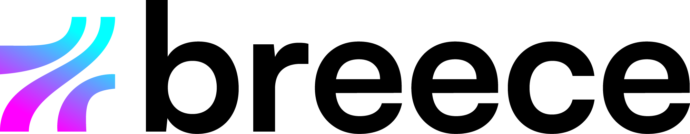

Das Technik-Team für Autohäuser
Kein Lead
bleibt liegen.
Neun von zehn Ihrer Kunden rufen an. Vollkommen zufrieden mit Ihrer Erreichbarkeit sind aber nur 30 Prozent. Wir schließen diese Lücke: über alle Kanäle, bis in den Service, ohne Wechsel Ihrer Systeme.
Vertrauen von Unternehmen wie


Schematische Darstellung: Anfragen aus mobile.de, AutoScout24, Website, Google, WhatsApp und Telefon laufen in einem gemeinsamen Eingang zusammen und werden von dort beantwortet.